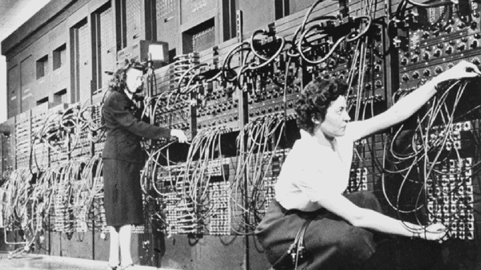

The ENIAC was able to lead to great things in our future. With this creation it allowed us to come up with even better technology in the future. You can see that the ENIAC was beneficial for the future of computers. It also helped us during the time when it was needed as well. For example, with the war, it helped so much for America.
When we look at the types of technology we have now we can trace that back to the ENIAC. A lot of credit goes to all of the great minds that helped build the ENIAC. Their creation led to the great technology we have now. The impact of the computer can go on and on. They go from the things it did in its time, but also what it did for the future.
Without the creation of the ENIAC the technology we have today might not be as great as it is. That is a big thing that I look at when it comes to this computer. So overall the impacts of the ENIAC were huge for its time, and for our future. The great things that it leads to will also lead to the great things that we see in the future and that we don’t have yet. The ENIAC had a great impact on computer science and deserves some credit when it comes to the future of technology.
